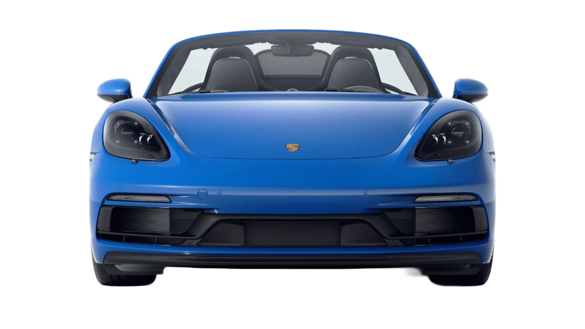

Roda
Roda de liga leve com design
icônico de 5 raios largos, inspirada no clássico estilo Fuchs


Porsche 718 Boxster GTS 4.0


Aceleração
de 0 a 100km/h
velocidade máxima
0CV
Roda de liga leve com design
icônico de 5 raios largos, inspirada no clássico estilo Fuchs

Roda de liga leve com design esportivo multiraios
Toque nos cartões para descobrir

O primeiro da geração Boxster
Começou com motor boxer de 2,5 litros e 204 cv

Recebeu novo desenho, interior atualizado e versões mais potentes.
a potência chegou a 310 cv no Boxster S.
 01
01
Modelos 986 Boxster S foram preparados para competir no Porsche Classic Restoracing Championship. Os carros recebiam equipamentos de segurança e preparação específica para as pistas.
 02
02
Utilizando exclusivamente Boxsters da geração 986 preparados para competição. A categoria foi criada como uma porta de entrada mais acessível para o automobilismo da Porsche.